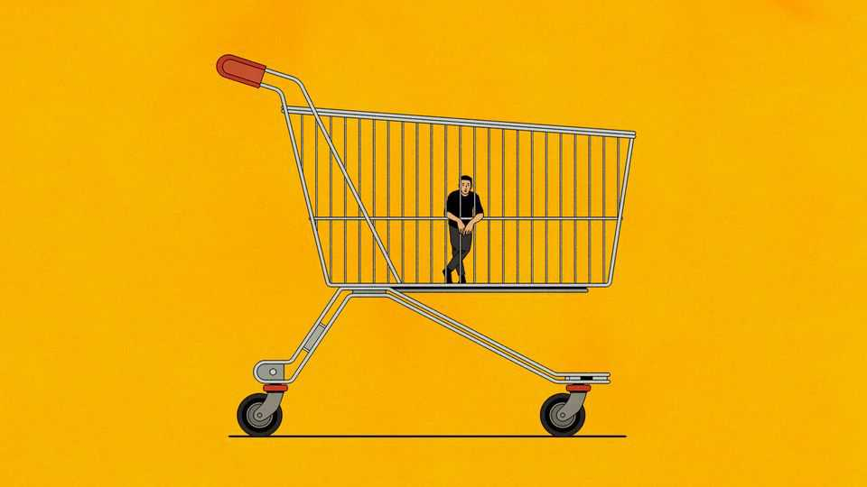

Governments are mishandling the affordability crisis
They should lift incomes, not suppress prices

Oct 8th 2026
STRIKES, BREAD riots and “socialistic agitation”: these worldwide expressions of discontent had a common cause, argued Irving Fisher, an economist at Yale University, in 1912. That shared grievance was the rising “cost of living”. The problem was felt in places as far apart as Canada and India, France and Japan. To expect any single locality to tackle the forces at work was almost as absurd as expecting “villagers on the Bay of Fundy to attempt to prevent the rise of the tides”.
The IMF agrees with him. In its latest World Economic Outlook, the fund’s economists look at more recent increases in the cost of living. The tides reached their highest points in 2007-08, when food and oil prices rose in tandem, and in 2022, after the invasion of Ukraine. Since the closure of the Strait of Hormuz the cost of living has once again been on the rise. During these crises, global factors have accounted for about 70% of the increase in the typical rich country, the IMF’s authors calculate. But of course national politicians tend to get closer to 100% of the blame.
What counts as a cost-of-living crisis (or, to Americans, an “affordability” crisis)? For most people, the answer is obvious. They know it when they see it printed on their shopping bill or posted outside a petrol station. But Fisher was keen to distinguish a “mere rise in prices”, otherwise known as inflation, from “a rise in prices more rapid than the rise in incomes”. A trolleyful of goods can cost more money without becoming any harder to obtain, if wages are rising just as fast.
The goods in the trolley can also change. A.A. Konüs, a Russian economist, defined the cost of living in 1924 as the expenditure required to secure a given “state of want-satisfaction”. If some prices rise and others fall, canny householders will change their shopping habits in response. They will satisfy their wants by buying less of the expensive stuff and more of the cheaper, “without necessarily changing the height of [their] standard of living”.
The IMF’s economists adopt a practical definition, concentrating on unusual increases in the cost of basic necessities, such as food and energy. Alternatives to these goods are hard to find. And their prices fluctuate violently, unlike other essentials, such as health care. To distinguish between cost-of-living crises and mere inflation, they rule out cases where the rising price of food and fuel is matched by a broader increase in consumer prices or wages.
By that definition, almost 90% of the 85 countries they study have suffered a cost-of-living crisis in the past 20 years. Eleven have suffered three or more. In the typical crisis, the cost of basic necessities rises by more than 8%, relative to other prices, over 18 months, and can remain higher for several years. Pay packets fail to keep up. At the worst point, inflation-adjusted wages fall by as much as 5.9%, relative to a crisis-free scenario.
In the face of this misery, what can be done? The people of the Bay of Fundy, which lies on the east coast of Canada, may be powerless to stop the tides, which rise higher in their bay than anywhere else. But they have not simply sat on their hands in the face of nature’s might. They have built hundreds of kilometres of dykes, punctuated by sluice gates, known as aboiteaux.
Policymakers around the world have been similarly active in response to cost-of-living crises. In emerging economies, these responses are evenly split between attempts to suppress the prices faced by end-buyers and efforts to raise the incomes of those affected. In rich economies, the split is more like 40-60 in favour of raising incomes. In the poorest countries, that mix is reversed.
Price-suppression, which includes cuts to tariffs and indirect taxes as well as price controls, can reduce inflation expectations “slightly”, the IMF authors concede. But these measures have little else to recommend them. They benefit the rich more than the poor for the simple reason that the rich buy more of the stuff the policies keep cheap. The IMF authors calculate that for every euro spent suppressing the price of electricity, gas and petrol in European countries, only 20 cents reached the poor.
Price-suppression sometimes takes the form of subsidies to producers. These make downstream firms more competitive overseas, increasing their exports. The money, in other words, flows from the taxpayer to foreign customers. Even price controls, which do not require direct payments from government coffers, can impose fiscal costs in the long run. The state must often bail out utilities that cannot pass on the extra cost of their inputs.
These measures also muffle the valuable signal that market prices send. Consumers have no reason to temper their demand or satisfy their wants with an alternative bundle of goods. They have no reason to wear a sweater rather than dialling up the thermostat. They are like reckless households in the Bay of Fundy who neglect to fortify their homes near the shore, confident that old flood barriers will keep them dry.
Why then do governments keep meddling with prices? Some poor countries lack the infrastructure to provide better kinds of help, such as means-tested handouts to the poor. Price controls or duty cuts are also quicker to enact. Rather than compensating people for hardship, they seek to prevent discontent at its root. The fact that the benefits are not confined to the poorest is a fiscal drawback but a political advantage.
Price-suppression is, if anything, becoming more popular. During this year’s crisis, about 70% of policy responses by rich countries’ governments have tried to keep a lid on prices. That was up from under 40% in 2022-23, after Russia’s invasion of Ukraine. Between those two episodes several incumbent governments around the world were ousted at the ballot box. Politicians do not want today’s cost-of-living crisis to cost them their own living. ■